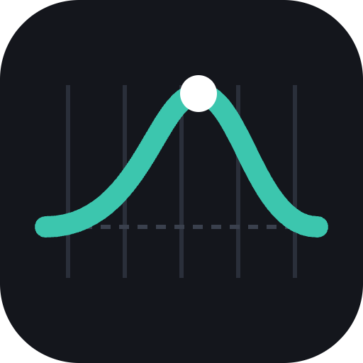

EarSweepSupport
Answers to common questions are below. If yours isn’t, email help@fitztoppicks.com with your browser and its version.
Getting started
How do I start?
Open Today and press Play (or P or Space). A hidden EQ boost is on one band: switch between Flat and EQ (or press F) to compare, then pick the band (or press 1–9). After you answer, tap any band to hear it. Ten questions make the daily drill.
I don’t hear anything
Press Play once the page has loaded: browsers start sound only after you click or tap. Check your device volume and where the sound goes (headphones or speakers). On iPhone and iPad, also check Silent mode, which can mute web pages.
Which sound should I practice with?
Start with pink noise: every band is easy to hear in it. Then move to the drum, bass, pad or full-mix loops, which sound more like a real mix. The bass loop only asks about the bands it really has (63 Hz to 2 kHz).
Can I install it or use it offline?
Yes. Use your browser’s Install or Add to Home Screen option. After your first visit it works offline, and EarSweep Pro stays on for up to 30 days without a connection.
Listening safety
Is it safe for my ears?
Keep the volume low and comfortable. A limiter is always on, and the volume slider starts low and stops short of full scale, but no limiter can make a loud setting safe. Use your device’s own limit too: on iPhone, Settings › Sounds & Haptics › Headphone Safety › Reduce Loud Audio; on Android, the volume warning or a media volume limit. Take a break every 30 to 45 minutes, and stop for the day if your ears ring or feel dull.
Your progress and songs
Where is my progress kept? Can I move it to another device?
In this browser on this device only. There’s no account or sync, so another browser or device starts fresh, and a private window keeps nothing after you close it.
How do I practice with my own songs?
With EarSweep Pro, open Practice, choose your songs as the sound and add an audio file your browser can play (MP3, WAV and AAC work almost everywhere). Up to 5 songs of up to 80 MB each are kept in your browser, and they’re never uploaded.
How do I delete my data?
Choose Erase my data on the Progress tab. It removes your progress, streak, history, settings, songs and license key from this browser.
EarSweep Pro
How do I unlock Pro?
Your license key is on the page after you buy and in your Gumroad receipt. In EarSweep, open Pro, paste the key under Have a key? and press Unlock Pro.
On how many devices can I use it?
One key works on up to 5 of your devices (each browser you unlock counts as one). If you need more, email help@fitztoppicks.com with your Gumroad receipt.
It says my key isn’t valid, or Pro turned off
Copy the key again from your Gumroad receipt, with no spaces. Pro turns off when a membership ends, is refunded or a renewal payment fails; renewing or updating your card in Gumroad turns it back on, and Check again on the Pro tab picks that up.
How do I cancel?
Use the Manage membership link in your Gumroad receipt, or open EarSweep Pro in your Gumroad library, and cancel there. Pro keeps working until the end of the year you paid for, and you aren’t charged again.
How do I get a refund?
Within 14 days of your first payment, reply to your Gumroad receipt or email help@fitztoppicks.com for a full refund. Renewals aren't refunded, so cancel any time before your renewal date in your Gumroad library and Pro stays on until then.